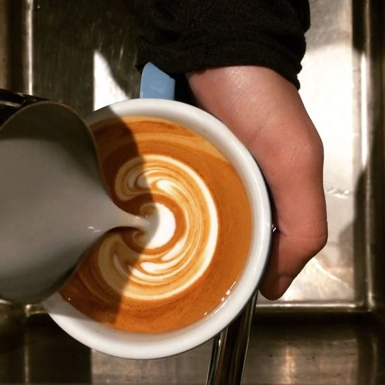

King's Street Coffee is a premier coffee shop located right outside NYC's Herald Square and Koreatown. We strive to brew the best coffee for all to enjoy, for native New Yorkers and visitors alike! Our space is open 6 days a week for anyone to sip a drink, catch-up with friends, or catch a breath.
Location: 121 W 30th St. New York, NY 10001
Hours:
7am to 5pm Monday through Friday
8am to 3:30pm Saturday
Closed Sunday